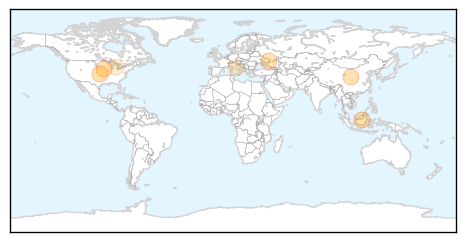

30 Day Trends
Web: 0 alerts, 0 warnings
Twitter: 0 alerts, 0 warnings
Top Articles:
- 0.975
- CDC Hypes Flu Dangers
- 0.961
- As deadly flu bug ebbs, milder strain spreads
- 0.960
- Flu shot protects against new H7N9 strain: study – BorneoPost Online
- 0.955
- Flu shot protects against new strain H7N9
- 0.955
- Flu shot protects against new H7N9 strain: study
- 0.928
- WHO increases humanitarian efforts as crisis in Ukraine continues - Ukraine
- 0.580
- Tamiflu Improves Flu Symptoms, Decreases Respiratory Infection Risk
- 0.515
- Ban on import of live poultry from Italy still in effect - Emirates 24
Top Tweets:
-
No tweets found for Feb 17, 2015
Web/News Articles

Tweets

Article Locations
Article Confidences